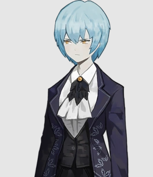

PATRON LIBRARIANS + Angela ig
Malkuth
Malkuth is the Patron Librarian of the Floor of History in the library, being one of the first floors you unlock in Library of Ruina. She is met after unlocking her Floor, after finishing all three episodes of Yun’s Office, which is one of first levels in the game. She doesn't seem to be very happy with the return of her new "human" body(which is made of light), because she expected to see it as something other than a "gift" for working for Angela.

Yesod
Yesod is the Patron Librarian of the Floor of Technological Sciences in the Library. He is met after unlocking his Floor, after completing the episode Hook Office. He values perfection more than anything else, as seen through many of his actions throughout the game. Yesod also tends to speak his mind, always in a very polite way, though still making backhanded comments. He expresses a dislike towards Angela and the ruthless methods she used in order to extract the Light during the events of Lobotomy Corporation, seeing it as a parallel to how he used to feign indifference to the deaths of L Corp Employees for the sake of diligence, and by extension, he initially dislikes Roland because of his subservience to Angela.
Hod
Hod is the Patron Librarian of the Floor of Literature in the Library. She is met after unlocking her Floor, after completing Episode 1 of Streetlight Office. Hod is a gentle and nice, but somewhat forebearing, person. She is very empathetic to most people, even people invited to the Library to fight, being the only Patron Librarian of the lower floors who empathizes with Angela's motivations for breaking out of Ayin's plan and having stolen the light at the end of Lobotomy Corporation. Much like her past life in Lobotomy Corporation, she cares deeply for her Librarians and tries to be helpful in her eyes, holding book discussion groups and sparring with them to boost morale on her floor.
Netzach
Netzach is the Patron Librarian of the Floor of Art in the Library. He is met after unlocking his Floor, after the Library is promoted to Urban Legend. Netzach strongly dislikes his role at the Library. He hates taking lives and often fails to sort incoming books, choosing instead to abuse the powers of the books to obtain things like beer. He shows a pessimistic attitude in his conversations with Roland, but like some of the other Patron Librarians, he seems to warm up to him as the story progresses.

Tiphereth
Tiphereth is the Patron Librarian of the Floor of Natural Sciences in the Library. She is met after unlocking her Floor, after leveling up all lower floors to Level 4. Wishing to honor Tiphereth B's, her dead brother, memory, she acts in a mature way, even playing the role of peacemaker between Gebura's hot-headedness and Chesed's ragebait. Nonetheless, whenever her maturity is questioned, either because of her appearance or her how she acts, she reacts in a hot tempered way, such as punching Roland when he mocked her for her height and childish way of speaking.(lol)

Gebura
Gebura is the Patron Librarian of the Floor of Language in the Library. She is met after unlocking her Floor, after completing the Reception of Shi Association. She acts straightforward in a way that sometimes comes off as rude, but has become more calm and cool-headed now that she has accepted her memories from the past, accepting that unrelenting anger will only hurt the people close to her and having learned to trust the sephirah and her assistant librarians, being like a mentor to them. Along with that, she seems to be more relaxed than before, often taking breaks to nap, disguising it as "meditating with her eyes closed". When she was human, she was a color fixer under the name "The Red Mist".

Chesed
Chesed is the Patron Librarian of the Floor of Social Sciences in the Library. He is met after unlocking his Floor, after finishing the first episode of Puppets. He has a gentle personality and speaks softly, often ending his sentences with a playful tone. Chesed is very knowledgeable about coffee blends, even though he can't taste it due to his form being made of light, and uses coffee as an analogy for sociology. He is now much more relaxed, and often tries to make excuses to hang out with the other sephirah on the middle floors, Gebura and Tiphereth. Chesed also has an exceedingly smug personality, often ragebaiting Gebura and picking fights with her. Although he appears to enjoy mocking his fellow Sephirah, he deeply cares for them and wishes to get closer with them.
Binah
Binah is the Patron Librarian of the Library's Floor of Philosophy. She is met after promoting the Library to Star of the City and subsequently unlocking her floor. Although she possesses a lot of amount of knowledge about The City and its people due to her past life of being an Arbiter of the Head, she often speaks in complicated metaphors and similes, rarely ever giving a straight answer. Her old sadism from when she was an arbiter seems to have mellowed out, having accepted that she's no longer the same person she was as an Arbiter. Even though she still finds some enjoyment in receiving guests and intimidating her colleagues, she seems to enjoy their company, acting kinder towards them and openly inviting them from tea. She also seems to have taken an elder role within the Library, often referring to other Patron Librarians and guests as "children".
Hokma
Hokma is the Patron Librarian of the Floor of Religion in the Library. He is met after unlocking his Floor, after completing any Star of the City level reception. He shows a great distaste for Angela, and by extension her 'servant' Roland. Hokma is still loyal to Ayin(AyinBen canon ), who was a colleague and coworker in L corp he greatly looked up to in his life as a human, believing his goal to have been the right one. He still has faith that the world Ayin dreamed of will one day arrive, the one where the seed of light project had come to fruition.

Roland
Roland is the Patron Librarian of the first Floor to be unlocked: the Floor of General Works. He used to be a Grade 9 Fixer of a one-man Office before he wandered into the Library. Roland works for Angela by getting her Books through receiving Guests, who are brought to the Library by the Invitations, fighting them during the Reception stage. In his conversations with Angela, he is shown to have a rather deadpan and sometimes sarcastic demeanor, often teasing her about her lack of knowledge about the City, and how she does not open up to him very much. Overall, Roland is a person who tries to make the best of his current situation, has a sense of logic and fairness, and shows some aversion when in stressful situations. However, this was a facade for something deeper, hiding his incredibly nihilistic and cynical worldview created due to the death of his pregnant wife, Angelica, at the hand of a powerful distortion called "The Pianist", going on a murderous rampage on anyone whom he thought was involved, causing him to go from a color fixer to a Grade 9 fixer as punishment. Since Angela basically created distortions, his reason for defeating all the guests is because he himself wants to have the pleasure of murdering Angela. What's unique about him is that he was not a part of the original Lobotomy Corporation team, being the only member of the Library to have that characteristic.
